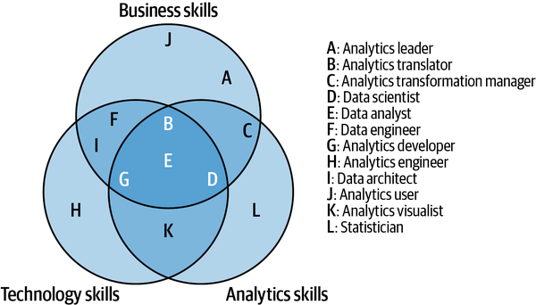

Preparing People
Preparing people for Augmented Analytics (AA) means aligning technical, organizational, and human readiness. Chapter 4 of Augmented Analytics (Weber & Zwingmann, 2024) emphasizes that transformation succeeds only when analytics becomes part of everyday work—supported by leadership, literacy, and structured enablement. The chapter outlines four key personas—leaders, translators, users, and professionals—each requiring tailored skills and programs. A Center of Excellence (CoE) anchors this effort by coordinating strategy, training, and governance, ideally evolving from centralized control to a federated model that balances expertise with local ownership.
This section also introduces workflow augmentation, where insights are embedded directly into processes through copilots, adaptive assistants, and collaborative tools, rather than delivered via static dashboards. This shift demands cultural change, strong API-based infrastructure, and a curated use-case library to share lessons and scale innovation. Finally, Weber and Zwingmann highlight human barriers—bias, overconfidence, and learned helplessness—and stress that sustainable analytics maturity depends on cultivating data literacy, storytelling, and a belief that people, not just technology, drive transformation.
Reference:
Chapter 4 and 5 from Weber, W., & Zwingmann, T. (2024). Augmented Analytics.
O’Reilly Media, Inc.
Available at: https://learning.oreilly.com/library/view/augmented-analytics/9781098151713/
Preparting People
Preparing people and the organization for Augmented Analytics means building both the skills and the culture needed to embed analytics into daily decision-making. Leaders must champion data-driven practices, analytics translators must bridge business and technical teams, and employees need at least analytics awareness to trust and act on insights. A Center of Excellence (CoE), executive sponsorship, and structured training ensure that AA is not just a technology upgrade but an organizational transformation that empowers all roles to benefit from data in their workflows.
Focus on roles (leaders, translators, users, professionals) and personas to structure the analytics transformation.
Build both technical readiness (data infrastructure, processes) and human readiness (mindset, skills, awareness).
Establish a Center of Excellence (CoE) to drive transformation, ideally business-anchored and federated over time.
- A CoE is an organizational structure set up to concentrate expertise, best practices, and resources around a specific domain, technology, or strategic priority. Its main purpose is to drive consistency, innovation, and efficiency across an organization.
Tailoring Augmented Analytics for Different Organizational Roles
Analytics Leader – Champions data-driven culture, aligns insights with strategy.
Analytics Translator – Bridges gap between business and technical teams, ensures use cases deliver value.
Analytics User – Consumes insights for better decisions; majority of workforce.
Analytics Professional – Technical experts building and maintaining analytics solutions.


Center of Excellence (CoE)
A CoE is a unit dedicated to organizing the analytics transformation.
During the Data Active maturity phase, it collects and connects all the loose threads of analytics activities that emerge.
- Purpose: Organize and guide analytics transformation, connect business units, build culture.
Core responsibilities:
Promoting data literacy and liberalization.
Building quick-win use cases (“lighthouse” projects).
Creating shared governance and culture.
Supporting business units and connecting their strategies.
Inspiring people across the company to take ownership of analytics
Approaches to Organizing a CoE
Decentralized Approach
Common in early-stage, Data Reactive organizations.
Business units develop analytics independently, often using ad hoc tools (Excel, VBA, Python, R, etc.).
Pros: High independence and agility within business domains.
Cons: Lack of governance, scalability issues, silos, and inefficiencies.
Bottom line: Tempting but unsustainable without stronger coordination.
Centralized Approach
Common in smaller organizations or when business units lack analytical skills.
A single CoE or IT unit manages analytics, reporting, and infrastructure.
Pros: Efficient, well-designed solutions and processes.
Cons: Bottlenecks, slow responsiveness, weak business insight, lack of shared ownership.
Bottom line: Works for early stages or small orgs but limits growth and responsiveness.
Federated Approach
A hybrid model that balances centralized expertise with decentralized ownership.
CoE starts as a strong driver, then gradually shifts responsibility to business units as data literacy grows.
Pros:
Encourages shared responsibility and democratization of data.
Business units handle routine analytics while the CoE tackles advanced challenges.
Builds a stronger data culture and faster responsiveness.
Cons: Requires strong governance, collaboration, and patience.
Bottom line: The most effective model for achieving Data Progressive (stage 3) maturity.
Difficulties Preparing People
Inherent bias
- Many of us are unaware of our knowledge gaps because we are inherently biased. We don’t know what we don’t know.
Perceived solvability
- People often assume that complex problems can be solved somehow, without actually tackling them and testing the approaches. This is particularly true in the AI environment, where the underlying technology accomplishes wonderful things in vaguely understood ways. It’s important that people understand how problem solving actually works, because finding a solution usually involves a lot of hard work.
Learned helplessness
- Repeated mistakes or negative experiences can lead individuals to believe that they cannot change, creating a state of “learned helplessness.” Organizations must instill the belief that effort can lead to improvement. With the advent of analytics, there are more opportunities than ever to demonstrate this in action.
Cultivating Data Literacy
Key Competencies
Analytics Awareness
Helps non-specialists understand data processes, quality, visualization, and core AI/ML concepts.
Fosters effective communication with data professionals and realistic expectations for AI projects.
Storytelling with Data
Translates complex insights into clear narratives for different audiences.
Requires mastering visualization, decluttering, and tailoring tone/context to make data compelling and actionable.
Data-Driven Management
Managers must commit to analytics strategy, ensure data integrity, and integrate analytics into decision-making.
Focus on aligning analytics with business goals, fostering ownership, and promoting a culture of continuous learning.
Leading in the Age of AI
Leaders need to progress from AI awareness to active engagement.
Competencies include identifying AI opportunities, managing AI project lifecycles, and integrating AI into business strategy.
Goal: build organizational capacity to leverage AI for transformation and innovation.
Enablement Programs
Analytics adoption requires different levels of data literacy depending on role.
Analytics translators need high literacy to identify and develop use cases.
Analytics users need analytics awareness—a general understanding of data’s value, processes, and visualization—to effectively use workflows without being experts.
Analytics leaders and practitioners need awareness, storytelling, and role-specific competencies.
For Leaders
- Initial workshops, executive roundtables, ThinkLabs, annual leadership summits.
For Translators
- Deep-dives into tools/methods, cross-disciplinary ThinkLabs, mentoring, project presentations
For Professionals
- Ongoing technical training (SQL, Python, R, statistics, ML).
Workflow Augmentation
A workflow is the repeatable sequence of steps, tasks, and decisions employees follow to achieve a business outcome.
Augmented Analytics succeeds only when insights are embedded inside workflows, not delivered separately in dashboards or reports.
Types of Workflow Augmentation
Fixed-Rule, High-Confidence Augmentation
Automated actions when preset conditions are met.
Works best for routine, well-defined tasks.
Example: routing claims or prepopulating CRM entries.
Idea & Insight Enrichment
Supports human decision-making with predictions, benchmarks, and visualizations.
Acts as a “copilot,” surfacing trends or comparisons.
Example: benchmarking risks in insurance underwriting.
Conversational Augmentation
Uses GenAI/LLMs in interactive assistants.
Example: GitHub Copilot for coding, or AI chat tools for summarizing contracts.
Contextual (Adaptive) Augmentation
Learns from users’ context, tailoring responses to role, history, or task.
Example: adaptive email or recommendation systems.
Collaborative Augmentation
Enhances teamwork through shared dashboards, repositories, and chatbots.
Example: Azure chatbot integrated into Microsoft Teams for compliance support.
Finding Workflows to Augment
Use the Analytics Use-Case Approach: a structured pipeline from idea → concept → proof of concept → prototype → pilot → product.
Each phase evaluates risk, ROI, and maturity before committing resources.
Success depends on validating assumptions iteratively.
Balancing Automation & Integration
- Workflows vary by automation (how much is done without humans) and integration (how deeply embedded in systems).
Four categories:
Four Categories Best to start with assistants and copilots before scaling to autopilots and agents.
The Use-Case Library
A central repository that tracks all analytics use cases from idea to deployment.
Benefits: transparency, monitoring, innovation sharing, cultural motivation, visibility of stakeholders.
Often includes Kanban boards, evaluation matrices, and documentation to foster collaboration and standardization.
Technical & Organizational Requirements
APIs & microservices (REST, Python, R) are recommended for flexible, vendor-independent integration.
REST stands for Representational State Transfer. It’s an architectural style for designing web services and APIs that allow systems to communicate over the internet.
- It decouples front-end and back-end, letting different apps (web, mobile, IoT) consume the same API.
In the Augmented Workflows chapter, REST APIs are recommended to integrate analytics into business workflows because they are modular, secure, and reusable.
Challenges: legacy systems, IT dependencies, governance, security, and compliance.
Analytics contracts (similar to data contracts) are proposed to ensure discoverability, trust, interoperability, and responsible use.